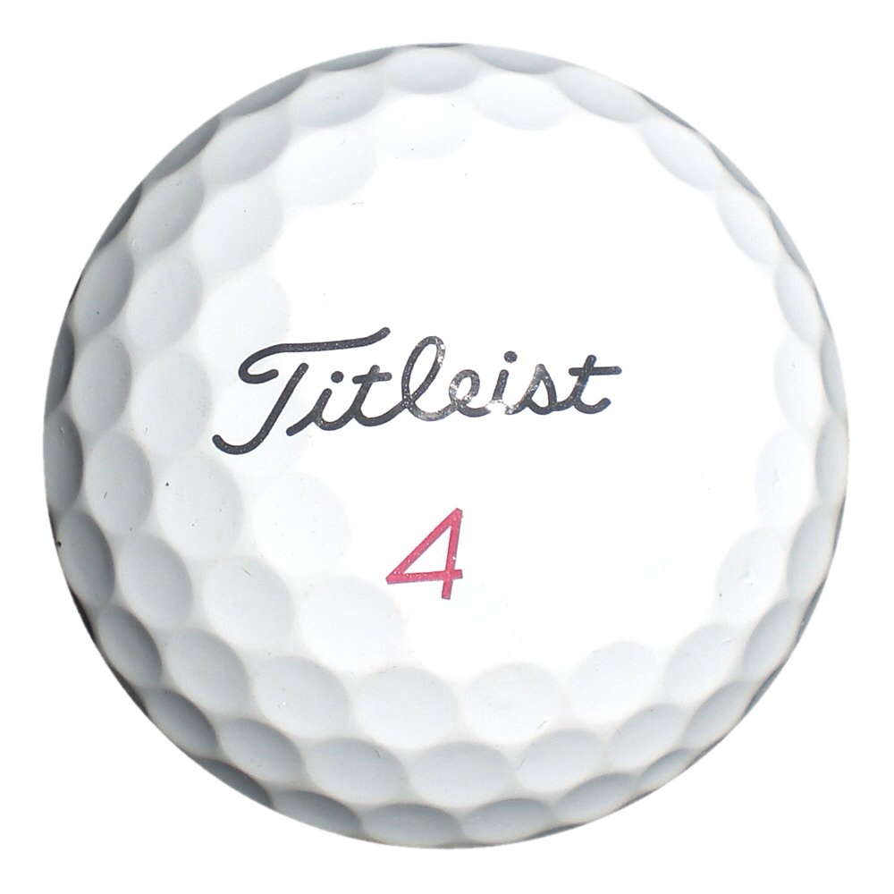
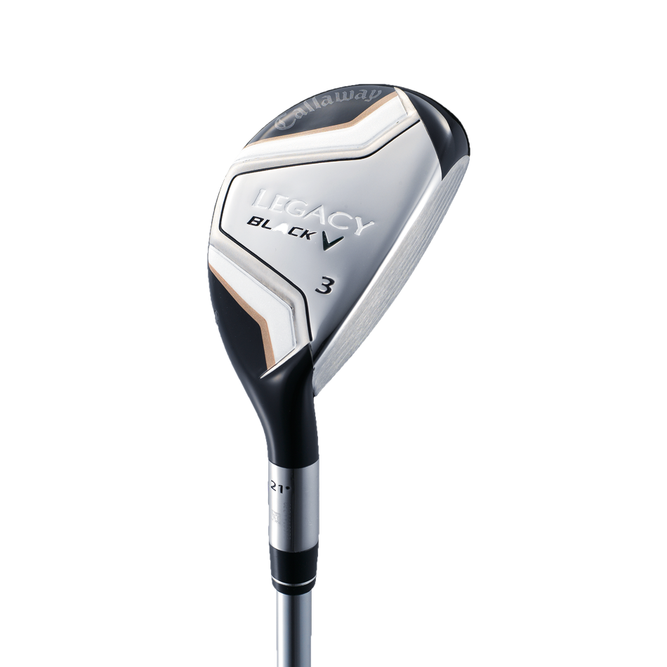
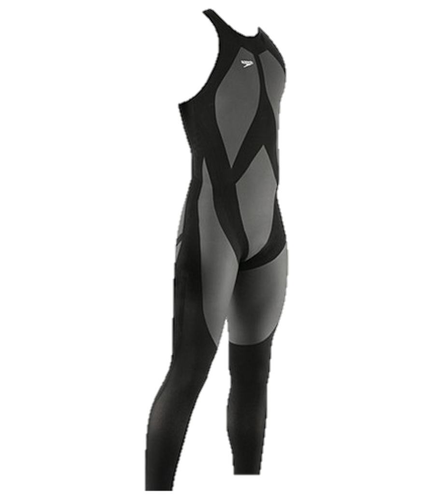

By the Vaporflies
Ross Cefalu, Shourya Khare, Sophie Handel, Tyler Jones
Athletes have definitely improved over the years. They are fitter, and have access to high nutrition diet.
Tactics have also improved over the years.
But, technology has also played in key role in this improvement.
(Data taken from PGA Tour, surveying people at r/golf,
and {insert swim source}.)
The graphite shaft was first marketed in 1970 at the PGA Merchandise Show but did not gain widespread use until the mid-1990s and is now used on
almost all woods and some iron sets, as the carbon-fiber composite of graphite shafts boasts increased flex for greater clubhead speed at the cost
of slightly reduced accuracy due to greater torque.
Bottom line, it increased the distance, everything else being the same, by about 7 or 8 yards.
Acer Velocity Graphite Shaft
In 2000, golf equipment manufacturer Titleist released their solid core ball, the Titleist Pro V1. Because of the solid core, the ball was accurate and could be hit for long distances. Many professionals switched from wound core to solid core soon, resulting in a 6 yard increase in drive distance between 2000 and 2001. Subsequent generations of the Pro V1 would also greately affect the drive distance.
Titleist Pro V1x golf ball
TaylorMade made the hybrid club popular with the release of its first set of hybrids in 2002. A hybrid golf club is simply a golf club which is designed to be an easier to hit alternative to a long iron. The primary advantage of a hybrid club is that it has design characteristics that make it easier to hit the ball higher. In addition, a hybrid club on average will send a ball approximately 5 to 8 yards further than will a typical iron.
Callaway Legacy Black Hybrid Club
Swimming stuff goes here.
Speedo LZR Racer Suit